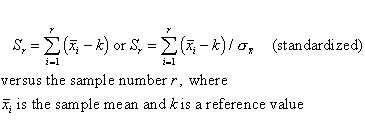
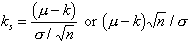
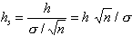
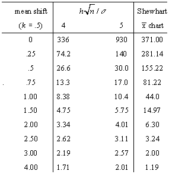

|
6.
Process or Product Monitoring and Control
6.3. Univariate and Multivariate Control Charts 6.3.1. What are Variables Control Charts? 6.3.1.3. Cusum Control Charts
|
|||
|
|
|||
| The ARL of CUSUM | The Average Run Length of Cumulative
Sum Control Charts
The operation of a taking sample sizes of cumulative sum (CUSUM) control
chart consists of taking samples of size n and plotting the cumulative
sums
 In practice k is generally set equal to (m0 + m1) / 2, where m0 is the target value, which is sometimes known as the acceptable quality level, and m1 is referred to as the rejectable quality level. If the distance between a plotted point and the lowest previous point is equal to or greater than h, one concludes that the process mean has shifted (increased). Hence , h is referred to as the decision limit. Thus the sample size n, reference value k, and decision limit h are the parameters required for operating a one-sided CUSUM chart. If one has to control both positive and negative deviations, two one-sided charts are used, with respective value k1, k2, (k1 > k2) and respective decision limits h and -h. The shift in the mean can be expressed by m - k. If we are dealing with normally distributed measurements, we can standardize this shift by  Similarly, the decision limit can be standardized by  |
||
| Determination of the ARL, given h and k. | The average run length (ARL) at a given quality
level is the average number of samples (subgroups) taken before an action
signal is given. The standardized parameters ks and hs
together with the sample size n are usually selected to yield approximate
ARL's L0 and L1 at acceptable
and rejectable quality levels m0
and m1 respectively. We would like
to see a high ARL, L0, when the process is on target,
(i.e. in control), and a low ARL, L1, when the
process mean shifts to an unsatisfactory level.
In order to determine the parameters of a CUSUM chart , the acceptable and rejectable quality levels along with the desired respective ARL ' s are usually specified. The design parameters can then be obtained by a number of ways. Unfortunately, the calculations of the ARL for CUSUM charts are quite involved. There are several nomographs available from different sources that can be utilized to find the ARL's when the standardized h and k are given. Some of the nomographs solve the unpleasant integral equations that form the basis of the exact solutions, using an approximation of Systems of Linear Algebraic Equations (SLAE). This Handbook uses a computer program that furnished the required ARL's given the standardized h and k. An example is given below: |
||
| Example of finding ARL's given the standardized h and k |
 If k = .5 than the shift of the mean (in multiples of the standard deviation of the mean) is obtained by adding .5 to the first column. For example to detect a mean shift of 1 sigma at h=4, the ARL = 8.38. (at first column entry of .5) The last column of the table contains the ARL's for a Shewhart control chart at selected mean shifts . The ARL for Shewhart = 1/p, where p is the probability for a point to fall outside established control limits. Thus, for 3 sigma control limits and assuming normalcy, the probability to exceed the upper control limit = .00135 and to fall below the lower control limit is also .00135 and their sum = .0027. (These numbers come from standard normal distribution tables or computer programs, setting z = 3) Then the ARL = 1/.0027 = 370.37. This says that when a process is in control one expects an out-of-control signal (false alarm) each 371 runs. When the means shifts up by 1 sigma, then the distance between the upper control limit and the shifted mean is 2 sigma. (instead of 3 s). Entering normal distribution tables with z = 2 yields a probability of p = .02275 to exceed this value. The distance between the shifted mean and the lower limit is now 4 sigma and the probability of xbar < -4 is only .000032 and can be ignored. The ARL is 1 / .02275 = 43.96 . |
||
| Shewhart is better to detect large shifts, CUSUM is faster for small shifts. | The conclusion can be drawn that the Shewhart chart is better to detect large shifts and the CUSUM scheme is faster for small shifts. The break-even point is a function of H, as the table shows. | ||